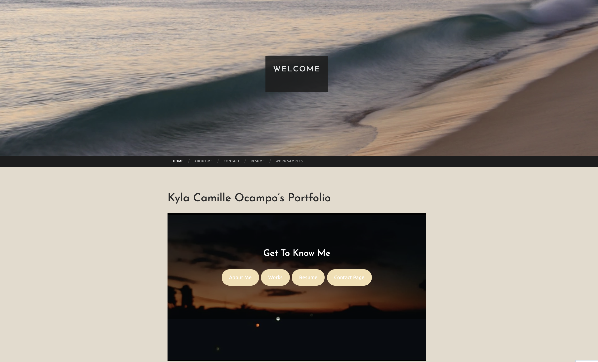

WordPress
I wasn't much of a fan of WordPress, although it was easy to use, I think it was a bit confusing. Since we've only used the free version, the feature was limited. One thing that was different about WordPress is everthing that you have to add is in blocks. I think those who are new to making websites will really like this feature. I really like the feature (code editor) when I'm done with designing the website, I could turn it into html. Some things that I struggled are making the homepage and what to put in my resume and work page, as I don't have a lot of works that I could include just yet.
For this assignment, we were tasked to make a portfolio. I've included a homepage, about me, works, resume, and contact page. For each page, we could use a template available to us.
Website:

Contact
Kyla Camille Ocampo
kylacamilleocamp@u.boisestate.edu
(000)-000-0000